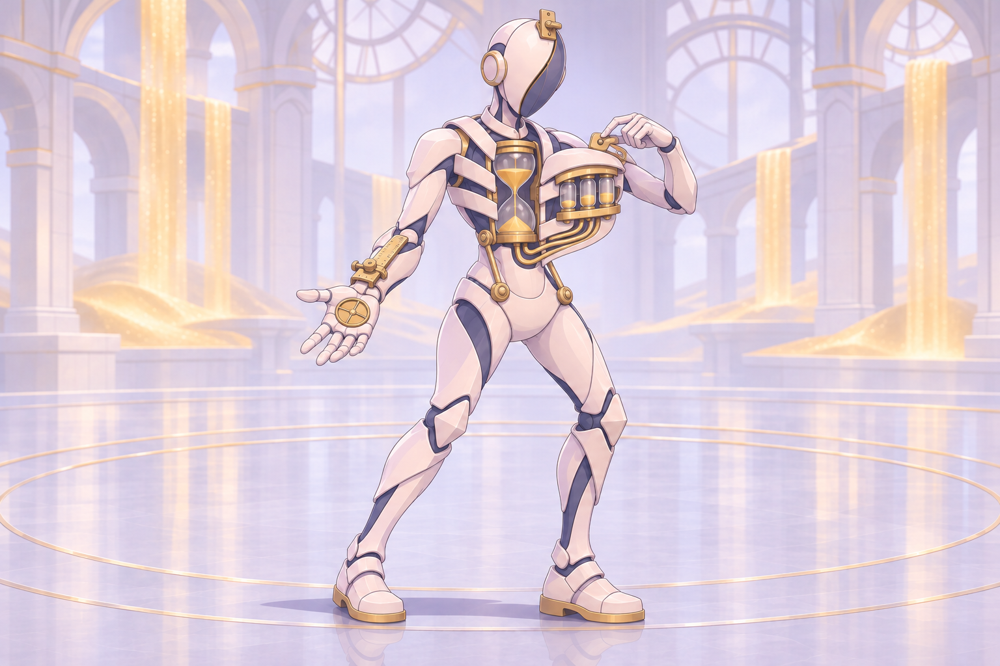

1스테이지 · 위엄을 강화한 의례체 3안
선택했던 봉인 얼굴과 온전한 모래시계를 계승하고, 넓은 흉곽·강한 하체·큰 기능성 아티팩트로 존재감을 강화했습니다.

1. 기억 봉인의 거대 의례체
큰 기억 캡슐 칼라와 층진 흉갑. 세 안 중 체중감과 방어적인 위압감에 중점을 둔 구성.
원본 PNG
2. 만상을 재는 정찰 의례체
등의 대형 캘리퍼 관측틀과 전완 계측기. 정찰병의 기능이 실루엣에 드러나는 구성.
원본 PNG
3. 모래 분신을 통솔하는 위상 의례체
몸과 연결된 마름모 위상틀과 손목 제어 고리. 모래 분신을 통솔하는 의례체의 구성.
원본 PNG이전 1스테이지 체형과 비교

이전 안의 좁은 어깨, 가는 하체, 작은 캡슐 장치를 확대·통합했습니다.
내장 image_gen · 각 1536×1024 · 전신·모래시계·장치 결합부 시각 확인. 기존 파일 보존.